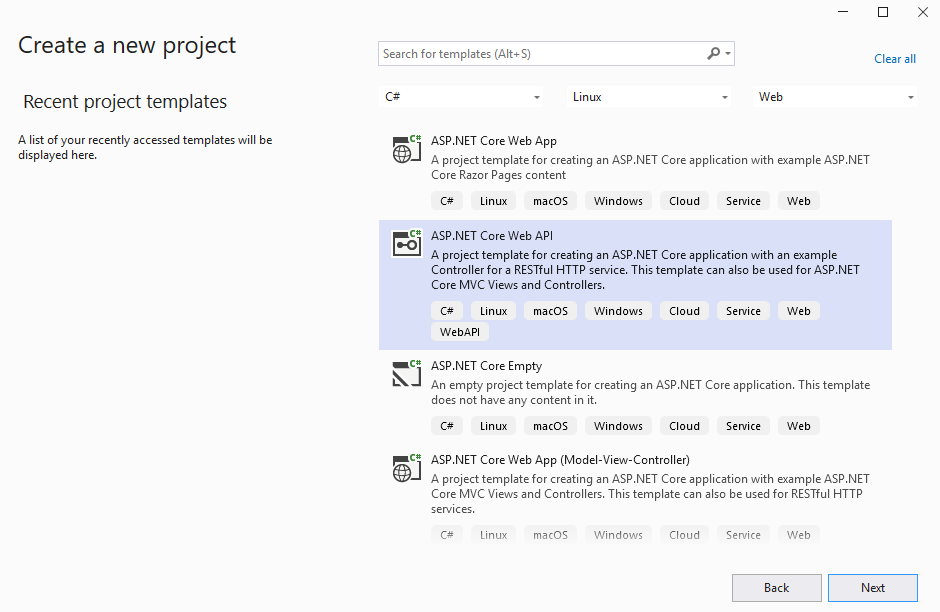
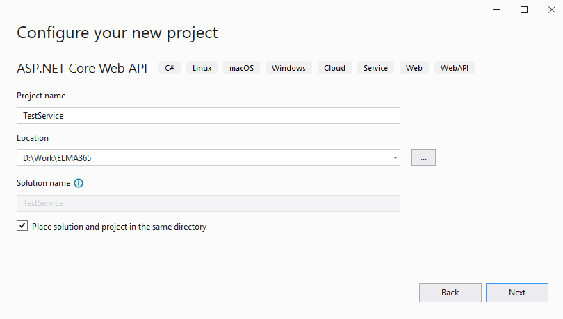
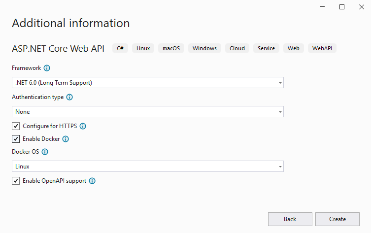
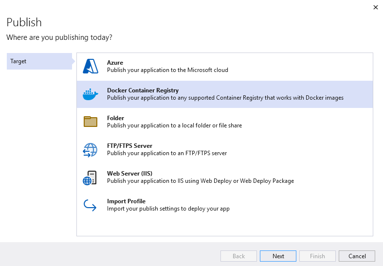
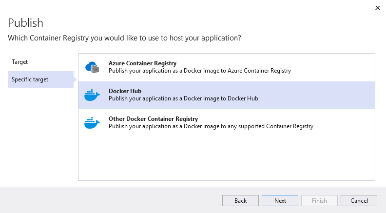
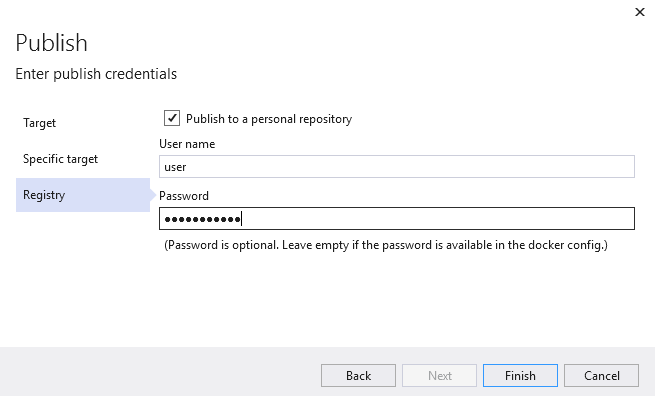
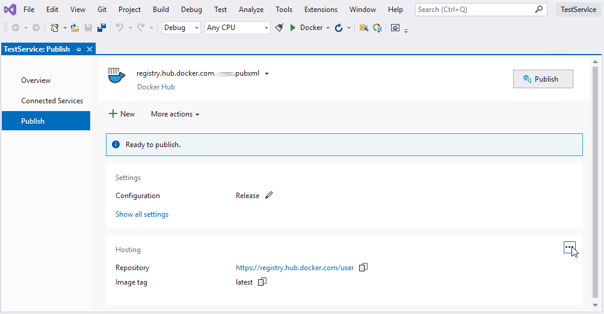
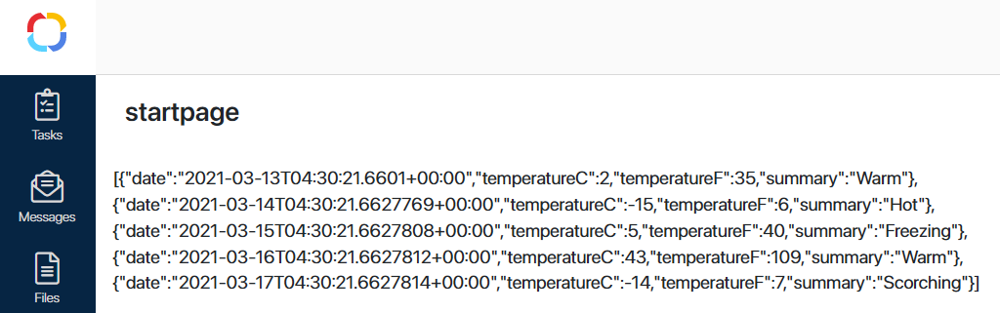

BRIX is an application with a microservice architecture. It consists of small-scale, loosely connected modules called microservices. These services are dedicated to certain business needs, and they are mostly used for one or several basic functions.
Services are deployed independently. They can be written in different programming languages and use different data storage methods. Read more in the Architecture article.
You can create your own service and locate it inside the Kubernetes cluster. This allows you to expand the system’s functionality. For example, you can create a service for working with *.xlsx files. It can read rows of data and save them to apps.
You need to create custom services only when other options don’t suffice. For example, you may need to add an external library. To create an integration with an external system, it is enough to use a solution.
You can write a service in any programming language. You just need a Docker image to deploy it in BRIX.
Below is an example of creating a service using .NET Core 5.
Create a service with .NET
Open Visual Studio 2019. Create a new project and configure the settings as shown on screenshots below.
As BRIX is deployed on Ubuntu, enable Docker and select Linux as the container type.



Visual Studio will create a default project. You can run it in Docker to make sure that the service works and can be accessed.
After testing, move on to the next step.
Prepare the project and upload it to Docker Hub
To let the system download a Docker image, you need to place it in a Docker repository. In our example, we are going to use the Docker Hub public repository. To use it, you need to register an account.
- Select the project you need and right-click on its name.
- Click Add — Docker Support… (depends on the target platform). Wait until the configuration is finished.
- Right-click the project’s name.
- Select Add — Container Orchestrator Support…, then choose Docker Compose. Wait until the configuration is finished.
- Right-click the project’s name.
- Select Publish — Docker Container Registry — Docker Hub.


- Specify the login and password to Docker Hub and publish the project.

- When you click Finish, a page in Visual Studio will open. Here you can specify a tag for the image before publishing. You can use it to version the service.

- Click Publish. Visual Studio will build the Docker image and send it to the Docker Hub repository.
This public repository is used only as an example. Use private repositories for your services or create your own using docker-registry.
Run and test custom service
- Create a deployment for pod management. A pod runs a container based on the provided Docker image.
To do that, run the following command:
kubectl create deployment <microservice_name> --image=<image_name> -n <namespace>
Where:
- <microservice_name> is the name of your service.
- <image_name> is the address where the image is stored (username/repository:tag).
- <namespace> is the namespace where the service will be created.
- Create a service to access your service:
kubectl create service clusterip <microservice_name> --tcp=80:80 -n <namespace>
- Make sure the service has appeared in the pod list. To do that, run the following command:
kubectl get pods -n <namespace>
You will see a list of services with statuses. Your service should be in the Running status.
- Test the service by running the
curlimage container in a Kubernetes cluster as an example:
kubectl run -i curl --rm --image=curlimages/curl:latest -- curl http://<microservice_name>.<namespace>:80/api/State
If the test is successful and the service responds, you will see the following message:
{"type":"GET","version":"47.0.200.1129"}
After testing you can move on to the next step.
начало внимание
To create custom microservices in BRIX, you can also use the functionality of the portable services.
конец внимание
Example of using a service in a widget
Let’s see how a service can be used.
We need to write a client-side script. When the widget is initialized, the server method WeatherForecast() will be called.
Client-side script:
async function onInit(): Promise<void> {
await Server.rpc.WeatherForecast();
}
Now let’s write the script on the server side.
Server script:
async function WeatherForecast(): Promise<void> {
Context.data.test = "debug";
try {
const res = await fetch(`http://<microservice_name>.<namespace>:80/WeatherForecast`);
if (!res.ok) {
Context.data.test = `request fail: ${res.statusText}`;
return;
}
Context.data.test = JSON.stringify(await res.json());
}
catch (error) {
Context.data.test = typeof(error) === 'object' ? `error: ${JSON.stringify(error)}` : `${error}`;
}
}
Let’s add the widget to a page. The result will be the following:

Delete a service
To delete the service, run the following command:
kubectl delete deployment <microservice_name> -n <namespace>
kubectl delete service <microservice_name> -n <namespace>
Found a typo? Select it and press Ctrl+Enter to send us feedback